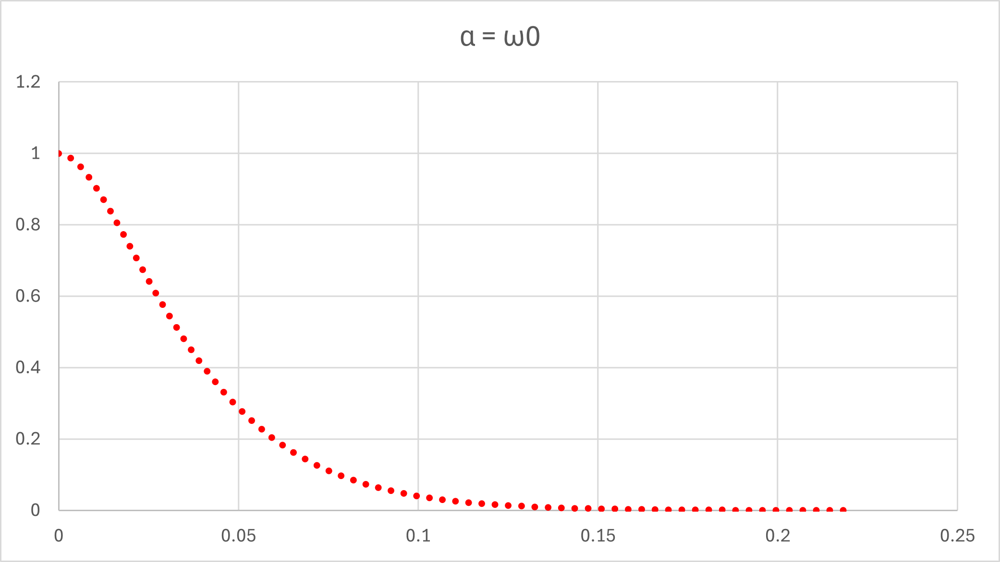

１７ー２．ステップ関数（RLC回路），初期条件，特に，微分を0としてみる
・α =ω0
ここに記したように，
平方根内が0となるので，
\(\Large \displaystyle \sqrt{ \alpha^2 - \omega_0^2} = 0 \)
とします．電流は，
\(\Large \displaystyle I(t) = (D_1 + D_2 \ t ) \ e^{- \alpha t} \)
となります，初期条件から，
\(\Large \displaystyle I(0) = D_1 =I_0 \)
\(\Large \displaystyle I'(t) = D_2 \ e^{- \alpha t} - \alpha (D_1 + D_2 \ t ) \ e^{- \alpha t} \)
\(\Large \displaystyle I'(0) = D_2 - \alpha \ D_1 = D_2 - \alpha \ I_0 = 0\)
\(\Large \displaystyle D_2 = \alpha \ I_0 \)
\(\Large \displaystyle I(t) = (I_0 + \alpha \ I_0 \ t ) \ e^{- \alpha t} = I_0 (1+ \alpha \ t ) \ e^{- \alpha t} \)
となります．
実際に，エクセル，でシミュレートしてみましょう．
V0 : 1 V
R : 10 Ω
L : 0.02 H
C : 0.0008 F
とすると，
\(\Large \displaystyle \omega_0 = \frac{1}{\sqrt{0.02 \times 0.0008} } = 250 \ (1/s) \)
\(\Large \displaystyle \alpha \equiv \frac{10}{2 \times 0.02} = 250 \ (1/s) \)
となり，α = ω0，の条件となります．
となり，

となります．
動画 (YouTube)
抵抗値を変化させたときの応答を動画として作成してみました．
条件は，大阪大学・基礎物理学実験，と同じ条件としてみました．